デプロイ手順書
アーキテクチャ
アーキテクチャは以下の通りです。
EC2 の部分は ECS にしたほうがより良いと考えられますが、今回は EC2 でと指定があったためそのようにしています。

デプロイ (Terraform)
Terraform の設定
terraform/environments/dev/terraform.tf と terraform/environments/dev/provider.tf を編集して設定をします。
terraform/environments/dev/provider.tf で指定する backend の s3 は事前に作成し、適切なアクセス許可をしておく必要があります。
Terraform の初期化
terraform init
※一度デプロイされているなどで以下のようなメッセージが表示た場合、-reconfigure オプションを付けて実行します。
Error: Backend initialization required: please run "terraform init"
│
│ Reason: Backend configuration block has changed
│
│ The "backend" is the interface that Terraform uses to store state,
│ perform operations, etc. If this message is showing up, it means that the
│ Terraform configuration you're using is using a custom configuration for
│ the Terraform backend.
│
│ Changes to backend configurations require reinitialization. This allows
│ Terraform to set up the new configuration, copy existing state, etc. Please run
│ "terraform init" with either the "-reconfigure" or "-migrate-state" flags to
│ use the current configuration.
Terraform の実行
terraform.tf で変数を設定して terraform でデプロイします。
アーキテクチャ図のところまではデプロイされます。
terraform plan
terraform apply
EC2 のユーザデータによってある程度はセットアップも行われます。
ユーザデータによるセットアップの内容は以下の通りです。
※詳細は terraform/script/init.sh を参照してください。
- タイムゾーンの設定
- ロケールの設定
- キーボードレイアウトの設定
- dnf の更新
- PostgreSQL のインストール
- docker のインストール
- root じゃなくても docker を起動できるようにする
- docker サービスの起動、自動起動設定
- docker-compose のインストール
- Java のインストール
- 3DCityDB-Importer-Exporter のインストール
- ADE プラグインのインストール
- i-UR 1.4 拡張モジュールのインストール
- 3D City Database のセットアップツールのインストール
EC2 での作業
EC2 に SSH で接続して作業します。
以降の手順で <> で囲われている箇所は環境にあわせて適宜設定します。
追加ディスクのマウント
データのサイズが大きいとディスクが足りなくなります。
ディスク自体は terraform で作成されているのでマウントします。
root ユーザに切り替え
sudo su -
フォーマットして /data にマウント
file -s /dev/sdf
mkfs -t ext4 /dev/xvdf
mkdir /data
chmod 777 /data
mount /dev/xvdf /data
再起動時の自動マウント設定
UUID を確認。
blkid /dev/xvdf
vi /etc/fstab
UUID は blkid コマンドで取得したものを指定します。
UUID=76e66f84-855d-4e36-ab81-b2a02f2746b6 /data ext4 defaults 1 1
データベース作成
masuter_user でログインします。
psql -h <host> -p <port> -U <user> -d postgres
CREATE USER citydb_user WITH LOGIN PASSWORD '<password>';
CREATE DATABASE citydb_v4 WITH TEMPLATE = template0 ENCODING = 'UTF8' LOCALE = 'ja_JP.UTF8' OWNER citydb_user;
\c citydb_v4
CREATE EXTENSION postgis;
--CREATE EXTENSION postgis_sfcgal; RDSでは未対応だった
CREATE EXTENSION postgis_raster;
citydb_user でログインできることを確認します。
psql -h <host> -p <port> -U citydb_user -d citydb_v4
3DCityDB の構築
接続先を設定
cd ~/3DCityDB-Importer-Exporter/3dcitydb/postgresql/ShellScripts/Unix
vi CONNECTION_DETAILS.sh
export PGBIN=/usr/bin/psql
export PGHOST=<host>
export PGPORT=<port>
export CITYDB=citydb_v4
export PGUSER=citydb_user
シェル実行
chmod 755 CREATE_DB.sh
./CREATE_DB.sh
最初の SRID の指定で 6697 を指定し、それ以外はデフォルトとします。
インポートツールにパスを通す
vi ~/.bashrc
export PATH=~/3DCityDB-Importer-Exporter/bin:$PATH
source ~/.bashrc
インポート
拡張ディスク上で作業しないとディスクがたりなくなるため注意してください。
※中央区だけで 10GB 程度ありました。
cd /data
wget https://assets.cms.plateau.reearth.io/assets/f4/d27eb2-1312-4406-8acf-54f6c5384ae6/13102_chuo-ku_city_2023_citygml_1_op.zip
unzip 13102_chuo-ku_city_2023_citygml_1_op.zip -d 13102_chuo-ku_city_2023_citygml_1_op
impexp import でインポートします。
詳細は impexp-cli-import-command を参照してください。
impexp import -H <host> -P <port> -d citydb_v4 -u citydb_user -p <password> 53394622_bldg_6697_op.gml
※EC2 や DB のスペックが低いとかなり時間がかかります。
追加テーブル作成 & 重心データ作成
事前に SCP などで init.sql と city_boundary.csv をアップロードしておきます。
※init.sql 実行後に追加で impexp import した場合、init.sql を再度実行する必要があることに注意してください。
psql -f init.sql -h <host> -p <port> -U citydb_user -d citydb_v4
境界データインポート
事前に 境界データ作成 を行い、city_boundary.csv を作成しておく必要があります。
更新が不要な場合、data/city_boundary.7z を解凍して使用してください。
※座標系がかわるなどの理由がない限りは更新不要です。
psql -c "\copy citydb.city_boundary from city_boundary.csv delimiter ',' csv;" -h <host> -p <port> -U citydb_user -d citydb_v4
アプリの環境設定
Secrets Manager に Secret を登録
JSON View で設定する場合は "<port>" の部分もダブルクォーテーションで囲わないといけないため注意してください。
{
"Database:Host": "<host>",
"Database:Port": "<port>",
"Database:Database": "citydb_v4",
"Database:Username": "citydb_user",
"Database:Password": "<password>",
"S3:Bucket": "<bucket>"
}
docker-compose.yml の設定
事前に SCP などで docker-compose.yml をアップロードしておきます。
必要に応じて nginx などを使ってもよいが、将来的に ECS に置き換える場合は不要なので、今回は直接 80 と 443 に直接公開しています。
※ただし、現状はドメインを取得していないため 443 では接続できません。
vi docker-compose.yml
services:
plateau.snap.server:
image: <account_id>.dkr.ecr.<region>.amazonaws.com/<repository>:<tag>
ports:
- "80:8080"
- "443:8081"
restart: always
environment:
- AWS_ACCESS_KEY_ID=<AWS_ACCESS_KEY_ID>
- AWS_SECRET_ACCESS_KEY=<AWS_SECRET_ACCESS_KEY>
- SECRET_NAME=<SECRET_NAME>
起動
docker-compose up -d --build --no-cache